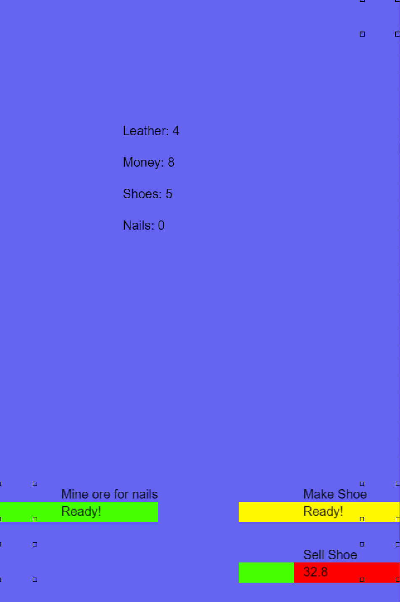
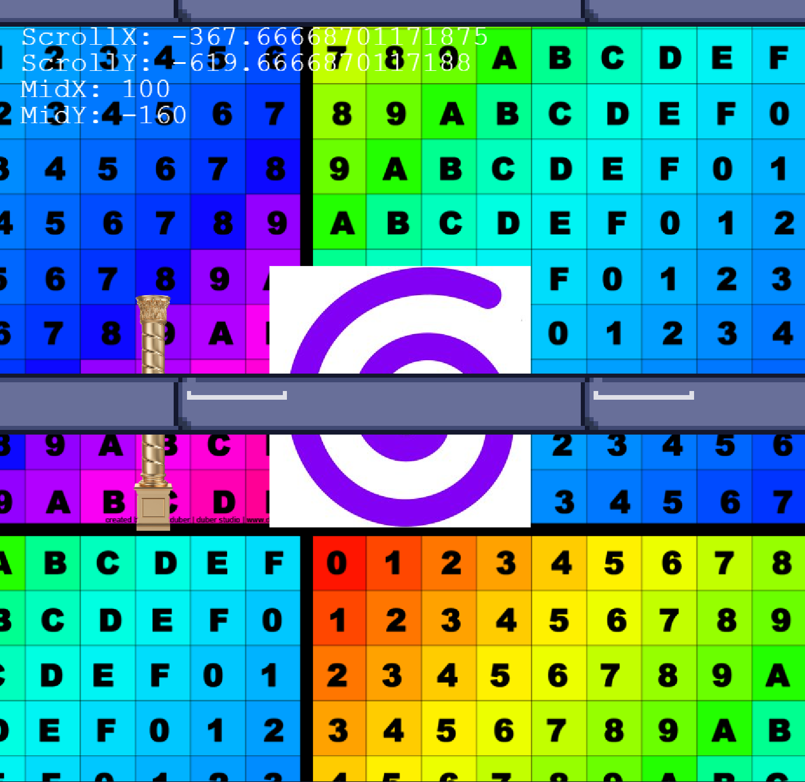
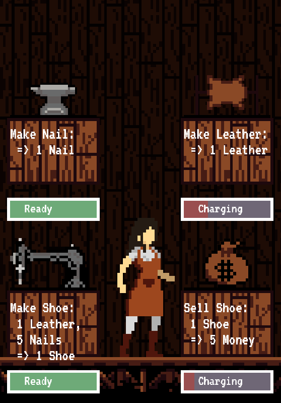
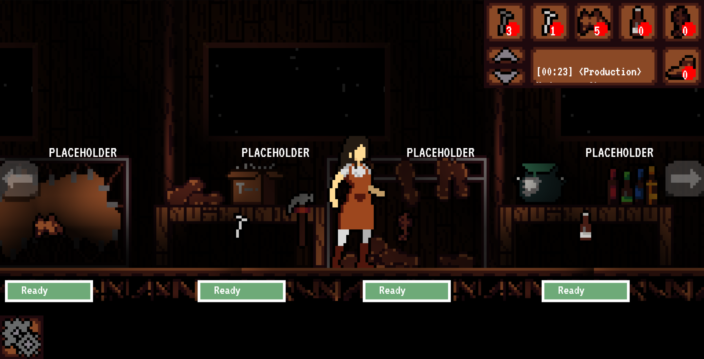
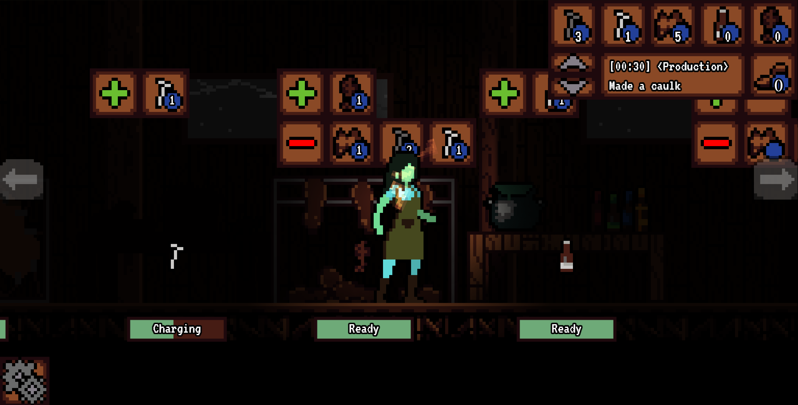

Sprite work for all art and animation (100+ assets).
Designed, developed, and implemented a custom, responsive, UI library.
Co-authored gameplay mechanics.
Implemented real-time lighting.
Documented and managed collaborative and individual tasks for the team.
Wrote internal documentation/milestone reports.
Managed regular correspondence with our temporary employer and a timely shipment.
Cobbler's Paradise - 2020Welcome to Cobbler's Paradise. A relaxing idler where you make shoes in a mysterious shoe shop.
Cobbler’s Paradise was a web-based idler game shipped on December 18th, 2020, marking my first official game shipment. During this project, I handled all of the art, UI design, and UI programming. I worked closely with my game development partner Remy as he handled all of the music, gameplay, and systems programming. The project lasted 4 months. It was built with Phaser 3 along with some custom JavaScript plugins created in-house, and was designed to run on mobile and desktop devices.
First, before any assets were drafted, I experimented with different layouts and element placement, as our employer wanted the game to display well for both mobile and desktop users.
Our first iteration of the game, testing the mobile layout and embryonic economy backend, lacked function and appeal. This prototype was built with GDevelop, and its lack of any layout adjustments at all caused us to pivot to Phaser. Successful test!
Before I dove into the shoe shop aesthetic and touched any sprite work, I wanted to test a parallaxing effect that was built into our new engine, Phaser.
This is a busy looking screenshot, but it was instrumental in the implementation of the parallax effect used in the final product. You can see some left over artifacts of our UI testing, too, the spacebar sprites arranged along the top and across the middle.
Next, some sprite drafts. Our MVP deliverable was coming up, so we needed something visual to show.
I drafted up some basic wood texturing and shoe shop decor for our first MVP deliverable to our employer. We stripped the movement/parallaxing from the MVP milestone to showcase the evolved economy we developed so far. We wanted to showcase a rough mobile layout, hence the vertical appearance of the screenshot.
Time to throw the parallaxing and lighting in!
As the project moved into the second half of its development cycle, art and UI elements were iterated upon and polished. Movement and parallaxing were re-implemented, real-time lighting effects were added, particle effects were designed, and the visual fidelity of the project was starting to approach a stage of completion.
After a few polish phases and iterations, the visuals of the game were finalized.
You can read more about the library here.
While Remy and I self managed for the most part, we both took turns being leaders. It’s hard (and somewhat detrimental) to remain exclusive to one responsibility/role in a team of two.
4 months, even working full-time, isn’t a long time to make a game. Especially for a commercial product, and considering I was in University full-time, too, there was no room for large set-backs.
We needed a comprehensive schedule, numerous design sessions, and the ability to pivot at a moment's notice. This design cycle was absolutely insane to navigate, but we succeeded in delivering exactly what our employer wanted. I made sure our task list was current and actively being worked on, milestones and reports were delivered on time, and that everything was in order to deliver the final product on time.
It was important to balance flexibility and rigidity in such a project, considering the 4 short months we had to complete it. I made sure major backend systems and other fundamental parts of the game were scalable by employing rigorous testing early on. We couldn't afford to make a major design overhaul at any point, so it was crucial that these monolithic systems would serve us to the end.
When flexibility was needed, such as our engine switch shortly after our first prototype and the numerous culls we made of content along the way, I made sure to justify such changes, document our reasoning, and catch up with our schedule. Making these calls are often hard, as they involve scraping hours of work done by myself or others, but the term "kill your darlings" comes to mind. If the project's timeline, performance, or creative direction calls for a cut, you have to muscle through it and adapt.
Our employer took a minimal approach to our supervision as well, requiring us to pick up the slack. They weren't a game company, or even a software company, so they had no clue how to handle a software project. With a lack of quality supervision, we needed to step up, self-managing when possible and helping each other up.
This project showcased to me the challenge of owning the entirety of the visual design and UI implementation from conception to completion, along with spinning plates for other temporary roles when it was needed. As my first official commercial game product, I never had to operate at this level of fidelity or quality for deliverables, and adhering to the technical “needs” of, say, mobile support, was definitely out of my comfort zone.
Working productively and punctually while in school to deliver a finished game in 4 months was a difficult endeavour to take on. As a team of two, even harder. I learned to iron out my workflow more, prioritize leanly, and adjust to changes or roadblocks on the fly. Time management is crucial.
I learned how to make a plan and the importance of a good one. There isn’t a lot of wiggle room with a 4 month development cycle, so we needed to hit the ground running and power through to the end. I learned to design early, fail fast, and recover quickly. A house needs a good foundation before you pick out the paint colours.
The final takeaway I had from completing this project was how important it is to iterate on design. Good design comes from an iterative process that involves exploration and decision-making until you've distilled your product to its essence. Especially condensed into 4 months, every little hiccup or change could spell disaster if not handled properly.
I would love the chance to lead a team again. It’s fulfilling to make a plan, monitor a project, and watch as the work comes together. I’d love to carry the skills that I learned forward into another project, with a ton more experience under my belt.